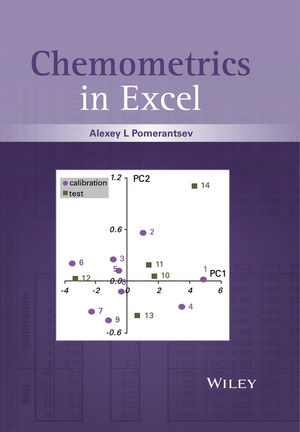

|
Новости
РХО |
|
7
марта 2018 г
Одиннадцатый зимний симпозиум по хемометрике (WSC-11) завершил свою работу.
В нем приняли участие около 60 человек.
Первый приз за лучшую постерную
презентацию получил
Иван Крылов (МГУ) -
бесплатное участие в Copenhagen School of Chemometrics CSC-2018
.
Второй
приз достался
Anita Rácz (Венгрия) -
книга Р. Бреретона "Chemometrics: Data Driven Extraction for Science, 2nd Edition".
Третье
место занял постер представленный
Paolo Oliveri
(Италия). В награду он получил книгу А. Померанцева "Chemometrics in Excel".
Приз лучшему молодому хемометрику
- бесплатное участие в конференции
CAC 2018 -
получил
Dávid Bajusz
(Венгрия)
Сергей Кучерявский
был награжден почетным знаком РХО "За
выдающийся вклад в развитие хемометрики в России"
WSC-11 фотоальбом
|
|
2
марта 2018 г
Алексей Померанцев и Оксана Родионова завершили
свою работу в руководстве РХО.
Новым председателем избран профессор
Дмитрий
Кирсанов (СПбГУ). Имя секретаря будет объявлено позднее.
|
|
5 Августа, 2017
Вышел специальный выпуск
Journal of Chemometrics,
который содержит избранные статьи, представленные на 10-ом зимнем
симпозиуме по хемометрики (WSC-10),
февраль 2016 г.
Приглашенный редактор
: Оксана Родионова
Содержание
|
|
 1
мая 2017 г 1
мая 2017 г
Одиннадцатый зимний симпозиум по хемометрике
(WSC-11) пройдет 26 февраля - 2 марта 2018
близ Санкт-Петербурга, на базе отдыха "Аврора-клуб".
Сайт симпозиума
|
|
11
марта 2016 г
Десятый
симпозиум по хемометрике (WSC-10)
прошел с 29 февраля по 4 марта 2016
г. в Самаре. В
нем приняли участие более 60 человек.
Призы компании
TPt
Cloud
за лучшую постерную
презентацию получили:
1-е
место:
Максим Ханнанов (компания
EnSpectr)
2-е место:
Алексей Скворцов (СПб ПУ)
3-е
место разделили:
Валерия Беликова (Сам ГТУ)
Мария Хайдукова
(СПб ГУ)
Юлия Монахова (СПб ГУ)
Приз "выбор профессора", предоставленный Сергеем Кучерявским, достался
Владиславу Галянину
(СамГТУ) и
Наталье Нечаевой
(МГУ)
Специальный приз - бесплатное участие в
COPENHAGEN SCHOOL of
CHEMOMETRICS – 2016 - получила
Наталья Нечаева
(МГУ)
Приз лучшему молодому хемометрику
- бесплатное участие в конференции
CAC 2016,
а также
бесплатное участие в
COPENHAGEN SCHOOL of
CHEMOMETRICS – 2016
-
получила
Анастасия Мелентьева (Сам
ГТУ)
В соревнованиях по фехтованию победили:
1
место:
Мария Хайдукова
(СПб ГУ)
2 место: Дмитрий Кирсанов
(СПб ГУ)
3
место:.
Бруно Дебю
(СПб ГУ) и
Валерия Беликова (СамГТУ)
WSC-10 фотоальбом
|
|
1
августа 2015 г
Десятый зимний симпозиум по хемометрике
(WSC-10) пройдет 29 февраля - 4 марта 2016 г. в
Самаре, на базе отдыха "Политехник", где проходил
симпозиум
WSC-5
Принимающая организация - Самарский
государственный технический университет.
Сайт симпозиума
|
|
25
октября 2014 г.
Вышел
из печати специальный номер
журнала
Journal of Chemometrics с
двумя первыми статьями,
представленными на Девятом зимнем симпозиуме по хемометрике (WSC-9) в
Томске, февраль 2014.
Редактор номера:
Оксана Родионова
Содержание
номера
|
|
15
мая 2014 г.
Издательство Wiley принимает заказы на
книгу
A.L. Pomerantsev, Chemometrics in Excel, Wiley, 336 pages, 2014 , ISBN: 978-1-118-60535-6
|
|
1
марта 2014 г
Девятый
симпозиум по хемометрике (WSC-9)
прошел в
17-21 февраля 2014
г. в загородном
отеле Томь. В
нем приняли участие более 40 человек.
Призы
компании
Umetrics за лучшую постерную
презентацию получили:
1-е
место:
Мария Хайдукова (СПб ГУ)
2-е место:
Екатерина Чередник (Томский ПУ)
3-е
место:
Виталий Панчук (СПб ГУ)
Приз "выбор профессора", предоставленный профессором Yi-Zeng Liang, достался
Екатерине Чередник (Томский ПУ)
Приз лучшему молодому хемометрику
- бесплатное участие в конференции
CAC 2014,
получил
Алексей
Скворцов (СПб ПУ)
WSC-9 фотоальбом
|
|
20 февраля 2014 г. Опубликована
книга
Померанцев А.Л. Хемометрика в Excel: учебное пособие, Томск, Из-во ТПУ, 2014, 435 стр. (ISBN 978-5-4387-0374-7)
|
|
20
августа 2013 г
Виртуальный
сборник избранных статей,
представленных на Восьмом симпозиуме по хемометрике (WSC-8) в
Дракино, МО, февраль 2012 опубликован на сайте журнала
Chemometrics and Intelligent Laboratory Systems.
В нем содержатся 6 работ, написанных учеными из России, Германии,
Дании, США и Италии.
|
|
17
мая 2013 г
Девятый зимний симпозиум по
хемометрике
(WSC-9) пройдет 17-21 февраля в загородном
отеле
Томь,
расположенном в живописном пригороде Томска.
Принимающая организация - Томский
политехнический университет.
Сайт симпозиума
|
|
20 февраля 2013 г.
Открыт предварительный прием заказов на первое издание книги
Померанцева А.Л. "Хемометрика в Excel",
которая написана на основе Учебного курса
по хемометрике. В приложении – CD с
программой Chemometrics AddIn и учебные Excel файлы.
Ориентировочная цена одного экземпляра 250 руб. Заказы
отправляйте на почту
rcs@chph.ras.ru
Пример (глава 10)
|
|
2
октября 2012 г.
15-18 октября 2012 г. в
Софийском университете Св. Климента Охридского будут
проходить курсы
"Chemometrics
in Excel"
Курс проводит: Алексей Померанцев ИХФ РАН
Программа
курсов
|
|
20
мая 2012 г
В
Претории (Южная Африка) завершился второй съезд Южноафриканского
хемометрического общества (SACS
-2012). На снимке справа налево:
председатель
оргкомитета - проф. Сильвия Пол (ЮАР), приглашенные докладчики
проф. Ким Эсбенсен (Дания) и проф. Рой Брунс (Бразилия).
Kim's
impressions
SACS
фотоальбом
|
|
12
марта 2012 г
Пятьдесят самых цитируемых российских
авторов в аналитической химии.
(по статьям, опубликованным в 2002-2006 гг)
|
|
2
марта 2012 г
Восьмой
симпозиум по хемометрике (WSC-8)
прошел в Московской области 27
февраля - 2 марта 2012 г. в загородном отеле
Парк Дракино. В
нем приняли участие более 60 человек.
Призы CAMO за лучшую постерную
презентацию получили:
1-е
место: Алексей Скворцов (СПб Политехнический)
2-е место:
Chris Marks (Richmond USA)
3-е
место:
Елена Вострокнутова (ОАО «УЭХК»)
Приз "выбор профессора", предоставленный профессором
Age Smilde, достался
Дмитрию Кирсанову (СпбГУ)
Приз лучшему молодому хемометрику
- бесплатное участие в конференции
CAC 2012,
получил
Андрей Самохин (МГУ)
Профессор
Kim
Esbensen был награжден почетным знаком РХО "За
выдающийся вклад в развитие хемометрики в России"
WSC-8 фотоальбом
|
|
25
февраля 2012 г.
Перед началом конференции
CAC-2012 будет проведен однодневный курс "Chemometrics
in Excel – Interactive Educational Programme"
Курс проводит:
Алексей Померанцев ИХФ РАН
Программа курса
|
|
15
января 2012 г.
Появился новый интересный сайт-блог по хемометрике и БИК
спектроскопии. Языки: испанский и английский.
Автор - José Ramón Cuesta
NIR-Quimiometría
|
|
11
ноября 2011 г.
Опубликован
новый учебник
Статистика
|
|
Учебник
Расширение возможностей
Chemometrics Add-In
пополнен новым разделом про использование
VBA для расширения надстройки
Chemometrics Add In
|
|
25
июля 2011 г.
Перед началом конференции
Евроанализ 16 будет проведен однодневный курс "Chemometrics
in Excel – Interactive Educational Programme"
Курс проводит: Оксана
Родионова ИХФ РАН
Программа курса
|
|
18
июля 2011 г.
Вышел
из печати специальный номер
"WSC-7: 7th Winter Symposium on Chemometrics"
журнала
Journal of Chemometrics с избранными статьями,
представленными на Седьмом зимнем симпозиуме по хемометрике (
WSC-7) в
Санкт-Петербурге, февраль 2010. Выпуск содержит 6 работ,
написанных учеными из России, Германии, Дании,
Италии, Ирландии и Чили.
Редактор номера:
Оксана Родионова
Содержание
номера
|
|
 6
июня 2011 г 6
июня 2011 г
Восьмой
симпозиум по хемометрике (WSC-8)
пройдет 27
февраля - 2 марта 2012
г. в загородном
парк-отеле Дракино около
Серпухова (100 км от Москвы).
Сайт
конференции
Буклет

|
|
1 мая 2011 г
В рамках выставки
Аналитика Экспо 2011 прошел семинар "Хемометрические подходы
к химическому анализу и контролю производства».
Программа семинара |
|
А.Л.Померанцев (ИХФ РАН) «Хемометрика и контроль
производственных процессов»
|
|
|
В.И.Вершинин (ОмГУ) «Хемометрика в работах российских
аналитиков»
|
|
|
О.Е.Родионова, А.Л. Померанцев (ИХФ РАН) «PAT: аналитический
контроль процессов»
|
|
|
А.В.Калинин, В.Н.Крашенинников, С.В.Садовский (ИСРАН)
«Многокомпонентный спектрометрический анализ полидисперсий на
примере молока»
|
|
|
Ю.А Каламбет. Ю.П. Козьмин, С.А. Мальцев (ЗАО "Амперсенд") «Хемометрические
методы в хроматографическом анализе»
Ю.А. Каламбет, С.А. Мальцев (ЗАО "Амперсенд")
«Окончательное решение проблемы фильтрации шумов цифрового
сигнала»
|
|
|
И.В.Власова,
А.С.Шелпакова (ОмГУ)«Спектрофотометрический анализ
лекарственных и поливитаминных препаратов с применением
хемометрических алгоритмов»
|
|
|
1
марта 2011 г
Пятьдесят самых цитируемых российских
авторов в аналитической химии.
(по статьям, опубликованным в 2001-2005 гг)
|
|
1
января 2011 г
Опубликован новый учебник
Классификация
|
|
1
марта 2010 г
Седьмой
симпозиум по хемометрике (WSC-7)
прошел в Санкт-Петербурге 15-19
февраля 2010 г. в загородном отеле
Райвола. В
нем приняли участие более 100 человек.
Призы
CAMO лучшему ученику школы достались:
1-е место Евгений Абрамов (СПбГУ)
2-е место Анна Шелпакова (ОмГУ)
Призы CAMO за лучшую постерную
презентацию получили:
Александр Дмитриев (АлГУ)
Инна Марусина (СПбГТУРП)
Приз
Wiley
лучшему молодому хемометрику получила
Юлия Монахова (СарГУ)
WSC-7 фотоальбом
|


{kind=link}
{kind=link}
{kind=link}
{kind=link}
{kind=link}
{kind=link}
{kind=link}
{kind=link}
{kind=link}
{kind=link}